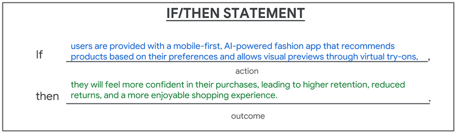
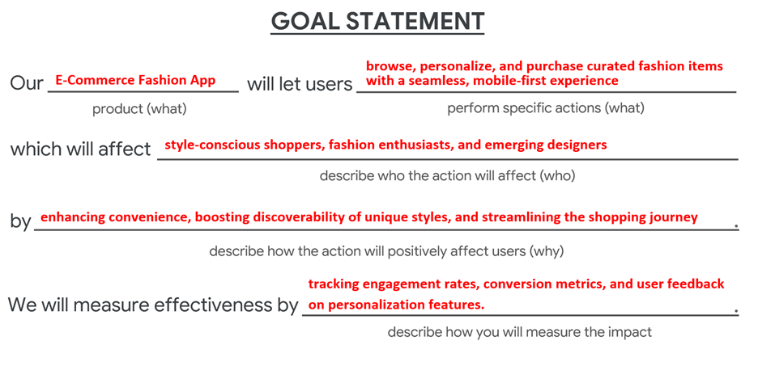
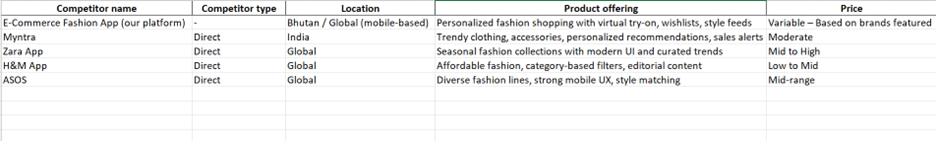
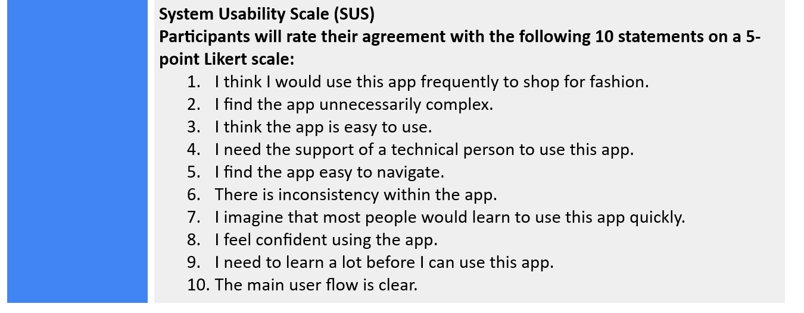

Portfolio Details
This project reflects my ability to solve real-world problems through thoughtful UX/UI design and user-centric functionality.


Project information
- Category: Mobile App
- Client: Bhutan Sale
- Project date: 12 January, 2022
- Project URL: www.ecommerce.com
E-Commerce Fashion App
The E-Commerce Fashion App is a cutting-edge mobile shopping platform designed specifically for fashion-forward individuals who value style, ease, and personalization. It showcases a carefully curated selection of the latest apparel, accessories, and footwear from both renowned global brands and rising independent designers. The app places a strong emphasis on quality and trendiness, making it a one-stop destination for users who want to stay ahead of the fashion curve. With intuitive navigation and smart search functionalities, users can effortlessly explore new collections, discover hidden gems, and keep up with the latest fashion trends—all from the convenience of their smartphones.
What sets this app apart is its commitment to delivering a highly personalized and engaging user experience. Advanced recommendation algorithms tailor product suggestions based on browsing history, preferences, and current fashion trends, ensuring every user enjoys a unique and relevant shopping journey. Features like wishlists, virtual try-ons, style guides, and real-time notifications on sales or new arrivals create an immersive environment that goes beyond simple transactions. Whether someone is refreshing their wardrobe for a new season or hunting for the latest streetwear drop, the E-Commerce Fashion App transforms online shopping into a dynamic, enjoyable, and fashion-focused experience.
Purpose:
The E-Commerce Fashion App is a mobile-first shopping platform designed for style-conscious users who want a personalized and seamless fashion experience. The app curates trending apparel, accessories, and footwear from both global and emerging designers, offering a tailored, smart, and dynamic shopping journey.
Problem Statement:
Many users struggle to find fashion platforms that balance trend relevance, ease of navigation, and personal recommendations. Existing apps often lack customization, overload users with irrelevant suggestions, or provide subpar mobile experiences. This app aims to combine personalization, convenience, and curated discovery in one cohesive platform.
Target Audience:
- Fashion Enthusiasts:Users who frequently shop online and follow fashion trends.
- Young Adults (18–35):Tech-savvy users who expect intuitive design and smart recommendations.
- Mobile Shoppers:Users who primarily browse and buy fashion items via mobile devices.
Goals:
- Create an intuitive, engaging mobile shopping experience.
- Offer highly personalized fashion recommendations.
- Improve product discoverability with smart filters and search.
- Build user loyalty through features like wishlists, virtual try-ons, and style feeds.
Empathize
User Research:
Q:What do you struggle with most when shopping for fashion online?
A:“Too many options and most of them don’t match my style or size.”
Q:What features do you wish fashion apps had?
A:“A smarter recommendation engine and something to show how items would look on me.”
Survey Summary (150 Users):
- 68% want better personalization in shopping apps.
- 73% use mobile devices for fashion shopping weekly.
- 56% abandon purchases due to poor navigation or irrelevant suggestions.
User Insights:
- Users are overwhelmed by too many unfiltered choices.
Possible Solution:Smart filters, AI-powered personalization. - Lack of real-life visual context makes decision-making hard.
Possible Solution:Virtual try-on, style previews. - Users want quicker access to favorites and trends.
Possible Solution:Wishlists, trend feeds, and notifications. - Navigation needs to be mobile-friendly and streamlined.
Possible Solution:Responsive UI/UX with bottom navigation, swipe-friendly menus.
Empathy Map:
| Who are the users? | Understand their background and situation. |
| What do they say? | Capture their thoughts on the product or similar ones. |
| What do they think? | Identify their opinions and concerns. |
| What do they do? | Track their actions before, during, and after using the product. |
| What do they feel? | Note their emotions throughout the experience. |
User Persona:
A user persona is a detailed profile that represents you based on your skills, interests, and ongoing projects. It helps define your strengths, expertise, and goals, making it easier to align your work with your interests.
User Story:
A User Story is a short, simple description of a feature told from the perspective of the person who desires the new capability, usually a user or customer of a system. It’s commonly used in Agile software development to capture a specific need in a concise way.
User Journey Map:
A User Journey Map is a visual or narrative representation of the user’s experience as they interact with a product or service. It highlights the steps a user takes to achieve a goal, including their emotions, needs, and pain points at each stage. It helps designers and developers create more user-centric solutions.
Define
Define Problem statement:
Users face difficulty navigating fashion e-commerce apps that aren’t tailored to their tastes or optimized for mobile use. This leads to abandoned carts, poor engagement, and user dissatisfaction.
- Solution:A mobile-first, AI-driven fashion app that delivers curated content, smart discovery, and engaging features like virtual try-ons and personal wishlists.
Define Hypothesis statement:
A Hypothesis Statement is a clear, testable prediction about the relationship between two or more variables. It is commonly used in scientific research, product development, A/B testing, and UX design to guide experiments and decision-making.
Ideate
Goal Statement:
Design a mobile-first e-commerce app that delivers trend-driven fashion items through an intuitive interface and offers personalized suggestions, wishlists, virtual try-ons, and seamless product discovery.
User flow:
A User Flow (also called a user flow diagram) is a visual representation of the path a user takes to accomplish a specific task within a product or website. It maps out each step or screen the user interacts with and shows the decision points along the journey.
- Home:Personalized product feed.
- Search:Smart filters by category, size, brand.
- Product Page:View images, reviews, virtual try-on.
- Wishlist:Save favorites, organize outfits.
- Cart/Checkout:Add to cart, secure payment, order tracking.
- Profile:Style preferences, order history, notifications.
Storyboard:
A Storyboard is a visual or narrative representation of a user’s interaction with a product or service, shown through a sequence of illustrated or described scenes. It’s widely used in UX design, product development, and filmmaking to visualize the user experience, empathize with users, and communicate ideas clearly.
Competitive Audit
A Competitive Audit is a strategic process where a business analyzes the strengths and weaknesses of its competitors to better understand the market landscape and improve its own positioning. It’s often used in marketing, product development, and business strategy.
Audit Goal:
The goal of this competitive audit is to analyze how leading fashion e-commerce apps deliver mobile-first shopping experiences, particularly in the areas of personalization, product discovery, visual interaction (e.g., virtual try-ons), and user engagement. By studying their strengths and gaps, this audit helps identify opportunities for the E-Commerce Fashion App to stand out through unique value propositions such as a highly tailored feed, intuitive filters, responsive design, and immersive features like wishlists and virtual try-on capabilities.
Paper Wireframe
A Paper Wireframe is a hand-drawn sketch of a user interface that outlines the basic layout, structure, and functionality of a digital product like a website or mobile app. It's an essential early step in the design process to quickly explore ideas and get feedback without worrying about visual details.
UX Research Study — Plan
Low-fidelity designs
Low-fidelity designs are basic visual representations of a product or system used in the early stages of design and development. They focus on layout, structure, and functionality rather than aesthetics, colors, or final content.
High-fidelity designs
High-fidelity (hi-fi) designs are detailed and polished visual representations of a product that closely resemble the final version. They are typically created after low-fidelity designs have been approved and refined.